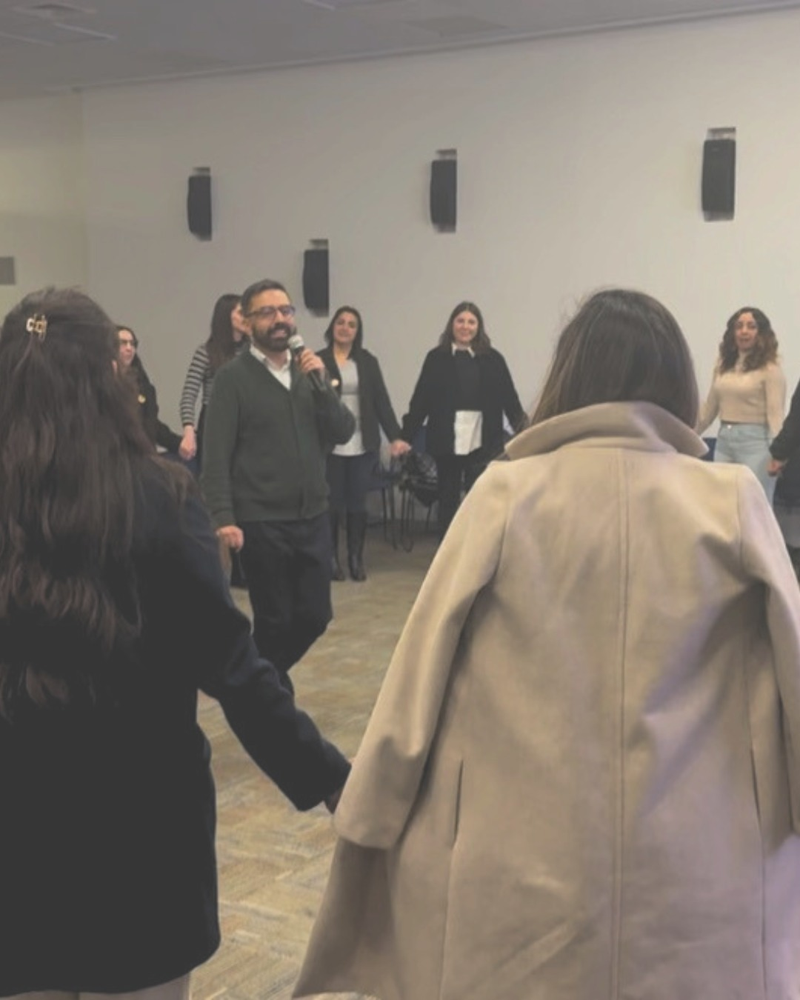

pero no baja
Las decisiones se frenan, se diluyen o se reinterpretan según el área.
La mayoría de los líderes nunca aprendió a liderar. Aprendió a ejecutar.
Y cuando les toca influir, decidir, sostener conflictos o alinear equipos… improvisan.
Liderar no se aprende en la teoría. Se entrena en la realidad.

Liderazgo, coordinación y cultura entrenados en contexto real.
Las empresas hoy tienen más estrategia, más información y más herramientas que nunca. Pero en la práctica siguen apareciendo los mismos quiebres.
Las decisiones se frenan, se diluyen o se reinterpretan según el área.
Se evitan conversaciones críticas y el costo se acumula en silencio.
Hay capacidad técnica, pero no comportamiento alineado.
Existe en presentaciones, no en reuniones, decisiones ni liderazgo.
No es capacitación. No son talleres. No es un cambio de un día. Es un sistema para intervenir liderazgo, equipo y cultura en la práctica.
Entrenamiento gamificado sobre influencia, decisiones, posicionamiento y conversaciones críticas.
Coordinación real, accountability y conflictos que hoy están trabando la ejecución.
RRHH, management y organización alineando herramientas concretas para sostener el cambio.
BetaMode System™ fue probado en empresas reales, no en escenarios controlados.
Esto no nace de teoría. Nace de intervenir el comportamiento en el mundo real y ver cómo cambia la forma en que las personas trabajan, lideran y se relacionan.

Si tu foco hoy está en compromiso, permanencia, seguridad y cómo se siente liderar dentro del equipo.
Si hoy el dolor es velocidad, coordinación, accountability y resultados sostenibles.
Si tu cultura no baja, depende de una sola persona o se diluye con los cambios.
Y el comportamiento no se enseña. Se entrena.
Agenda una conversación estratégica. No hay diagnóstico genérico. Hablamos de tu realidad.